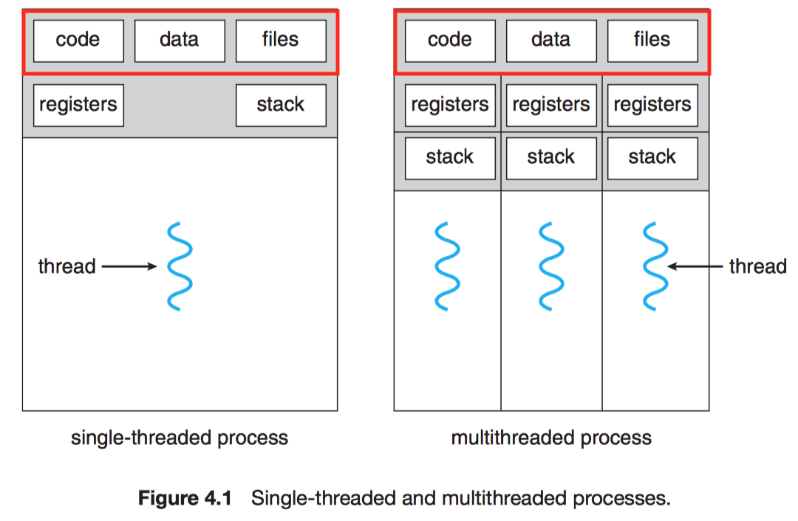
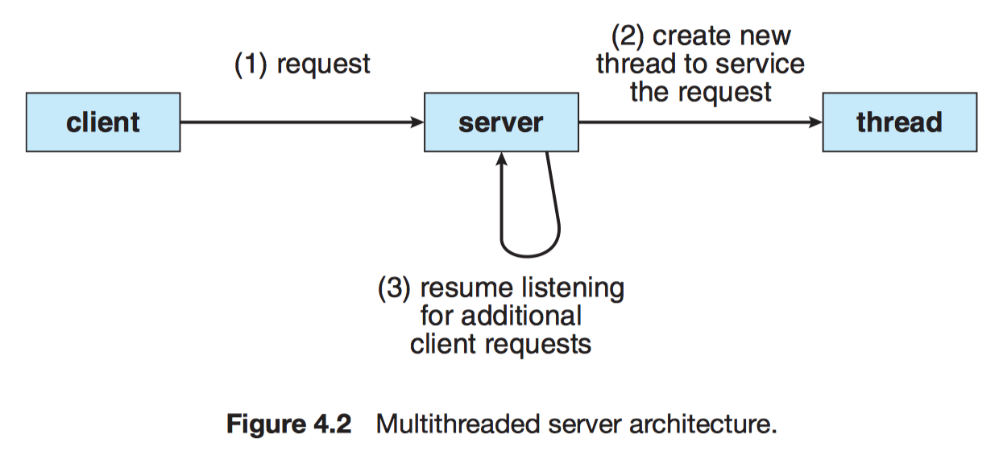
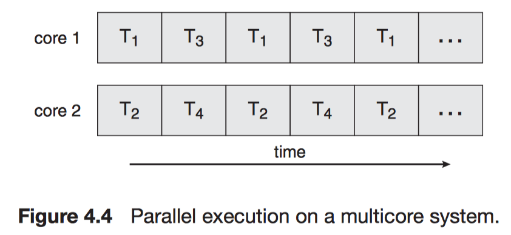
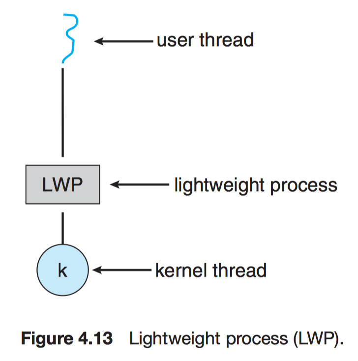

Chapter 4 Threads
4.1 Overview
Thread–Lightweight process (LWP)
A basit unit of CPU utilization.
A thread shares
- code section
- data section
- OS resources (e.g. open files and signals)
A thread have its own
- thread ID
- program counter
- register set
- stack

4.1.1 Motivation
It is generally more efficient to use one process that contains multiple threads since process creation is time consuming and resource intensive.

4.1.2 Benefits
The benefits of multithreaded:
- Responsiveness
- Resource sharing
- Economy
- Scalability/Utilization
4.2 Multicore Programming
A more recent, similar trend in system design is to place multiple computing cores on a single chip.
Multicore or Multiprocessor systems
The cores appear across CPU chips or within CPU chips.
Consider an application with 4 threads.
-
With a single core

-
With multiple cores

| Parallelism | Concurrency |
|---|---|
| Perform more than one task simultaneously. | Allow all the tasks to make progress. |
Amdahl's Law
If $S$ is the portion cannot be accelerated by $N$ cores (serially).
$$speedup \le \frac{1}{S + \frac{(1 - S)}{N}}$$
4.2.1 Programming Challenges
- Identifying tasks: Dividing Activities
- Balance (Equal value)
- Data splitting
- Data dependency
- Testing and debugging
4.2.2 Types of Parallelism
Data parallelism
Distribute subsets of the same data across multiple computing cores.
Each core performs the same operation.
e.g.
$$\sum_{i = 0}^{N - 1} arr[i] = \sum_{i = 0}^{N / 2 - 1} arr[i] (\text{thread } A) + \sum_{i = N / 2}^{N - 1} arr[i] (\text{thread } B).$$
Task parallelism
Distribute tasks (threads) across multiple computing cores.
Each thread performs a unique operation.
4.3 Multithreading Models
4.3.1 Many-to-One Model
-
pros:
- Efficiency
-
cons:
- One blocking syscall blocks all
- No parallelism for multiple processors
e.g. Green threads (Solaris)

4.3.2 One-to-One Model
-
pros:
- One syscall blocks one thread
-
cons:
- Overheads in creating a kernel thread
e.g. Windows NT/2000/XP, Linux, OS/2, Solaris 9

4.3.3 Many-to-Many Model
- pros:
- A combination of parallelism and efficiency
e.g. Solaris 2 & 9, IRIX, HP-UX, Tru64 UNIX


4.4 Thread Libraries
- User level
- Kernel level
Three main thread libraries:
- POSIX Pthreads: User or kernel level
- Windows: Kernel level
- Java: Level depending on the thread library on the host system.
Two general strategie for creating threads:
- Asynchronous threading: parent doesn't know children.
- Synchronous threading: parent must wait for all of its children. (fork-join)
All of the following examples use synchronous threading.
4.4.1 Pthreads
Pthreads
The POSIX standard (IEEE 1003.1c) defining an API for thread creation and synchronization. This is a specification for thread behavior, not and implementation.
4.4.2 Windows Threads
4.4.3 Java Threads
Creating a Thread object does not specifically create the new thread. $\to$ start() does!
- It allocates memory and initializes a new thread in the JVM.
- It calls the
run()method, making the thread eligible to be run by the JVM. (Note again that we never call therun()method directly. Rather, we call thestart()method, and it calls therun()method on our behalf)
4.5 Implicit Threading
4.5.1 Thread Pools
The issue of multithreaded server:
- Time to create the thread
- Concurrency
Thread pool
Create a number of threads at process startup and place them into a pool, where they sit and wait for work.
The benefits of thread pools:
- Speed
- Limited # of threads, which is good for OS.
- Seperating the task of creating tasks allows us to use different strategies.
- Dynamic or static thread pools
e.g. QueueUserWorkItem(), java.util.concurrent.
4.5.2 OpenMP
OpenMP
A set of compiler directivese and APIs to support parallel programming in shared memory environment.
Threads with divided workload are created automatically based on # of cores or a set bound.
Parallel regions
Blocks of code that may run in parallel.
When OpenMP encounters
#pragma omp parallel
it creates as many threads are there are processing cores in the system.
e.g.
#pragma omp parallel for
for (i = 0; i < N; i++)
c[i] = a[i] + b[i];
4.5.3 Grand Central Dispatch
A ma sOS/iOS combination of extensions to the C.
Like OpenMP, GCD manges most of the details of threading.
^{ printf("I am a block."); }
GCD schedules blocks for run-time execution by placing them on a dispatch queue.
- Serial (FIFO)
- Concurrent (FIFO)
- low
- default
- high
dispatch_queue_t queue = dispatch_get_global_queue(DISPATCH_QUEUE_PRIORITY_DEFAULT, 0);
dispatch_async(queue, ^{ printf("I am a block.") });
4.5.4 Other Approaches
e.g. Intel's Threading Building Blocks (TBB), java.util.concurrent.
4.6 Threading Issues
4.6.1 The fork() and exec() System Calls
fork() issue
- Duplicate all threads?
- Is the new process single-threaded?
exec() issue
If a thread invokese the exec(), the program specified in the parameter to exec() will replace the entire process—including all threads. Thus if exec() is called immediately after forking, then duplicating all threads is unnecessary.
4.6.2 Signal Handling
All signals follows:
- A signal is generated by the occurrence of a particular event.
- The signal is delivered to a process.
- Once delivered, the signal must be handled.
Two types of signals:
-
Synchronous signal: delivered to the same process that performed the operation causing the signal.
- illegal memory access
- division by 0
-
Asynchronous signal
- generated by an external process (e.g. ^C)
- having a timer expire
A signal may be handled by:
- A default signal handler
- A user-defined signal handler
Signal delivering:
- Deliver the signal to the thread to which the signal applies. (e.g. division by 0)
- Deliver the signal to every thread in the process. (e.g. ^C)
- Deliver the signal to certain threads in the process.
- Assign a specific thread to receive all signals for the process.
Functions/Methods for delivering a signal:
-
UNIX:
kill(pid_t pid, int signal)
-
POSIX:
pthread_kill(pthread_t tid, int signal)
-
Windows:
- Asynchronous Procedure Calls (APCs)
4.6.3 Thread Cancellation
Target thread
A thread that is to be canceled.
Cancellation of a target thread may occur in two different scenarios:
- Asynchronous cancellation. One thread immediately terminates the target thread.
- Deferred cancellation. The target thread periodically checks whether it should terminate, allowing it an opportunity to terminate itself in an orderly fashion.
Canceling a thread asynchronously may not free a necessary system-wide resource.
pthread_tid;
/* create the thread */
pthread_create(&tid, 0, worker, NULL);
...
/* cancel the thread */
pthread_cancel(tid);
Pthreads supports three cancellation modes:
| Mode | State | Type |
|---|---|---|
| Off | Disabled | – |
| Deferred | Enabled | Deferred |
| Asynchronous | Enabled | Asynchronous |
Cancellation point
Cancellation occurs only when a thread reaches a cancellation point.
Cleanup handler
If a cancellation request is found to be pending, this function allows any resources a thread may have acquired to be released before the thread is terminated.
e.g. deferred cancellation:
while (1) {
/* do some work for awhile */
/* check if there is a cancellation request */
pthread_testcancel();
}
4.6.4 Thread-Local Storage
Thread-Local Storage (TLS)
Each thread might need its own copy of certain data.
TLS is similar to static data.
| TLS | Local variables |
|---|---|
| visible across function invocations | visible only during a single function invocation |
4.6.5 Scheduler Activations
Lightweight process (LWP)
A virtual processor (kernel threads) on which the application can schedule a user thread to run. (many-to-many or two-level)

Scheduler activation
The kernel provides an application with a set of virtual processors (LWPs), and the application can schedule user threads onto an available virtual processor.
Upcall
The kernel must inform an application about certain events.
4.7 Operating-System Examples
4.7.1 Windows Threads
The general components of a thread include:
- A thread ID uniquely identifying the thread
- A register set representing the status of the processor
- A user stack, employed when the thread is running in user mode
- A kernel stack, employed when the thread is running in kernel mode
- A private storage area used by various run-time libraries and dynamic link libraries (DLLs)
Context (register set, stacks, and private sotrage area) of the thread:
-
Kernel space
-
ETHREAD—executive thread block:
- a pointer to the process
- the address of the routine
- a pointer to the corresponding KTHREAD
-
KTHREAD—kernel thread block
- scheduling/synchronization information
- the kernel stack
- a pointer to TEB
-
-
User space
- TEB—thread environment block
- the thread ID
- a user-mode stack
- an array for TLS
- TEB—thread environment block

4.7.2 Linux Threads
clone() vs fork()
- term task—rather than process or thread
- Several per-process data structures
- points to the same data structures for open files, signal handling, virtual memory, etc.